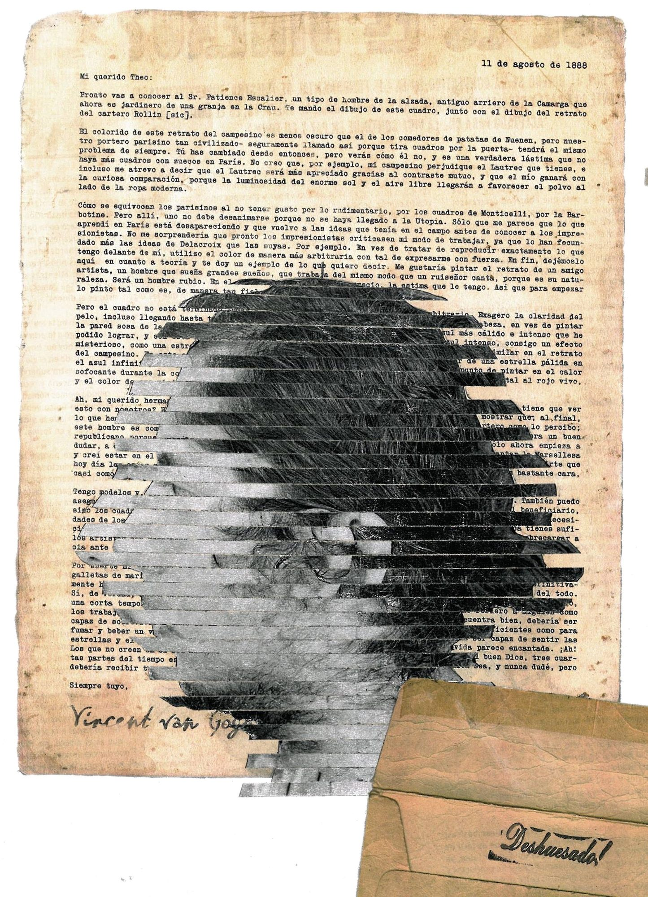

Statement
In my work I question the norms that regulate how we live: the rules, sometimes explicit and sometimes silent, through which we learn how to behave, how to speak and how to look at what surrounds us. I am interested in language as one of those rules. I think it works like a code or a program that we follow almost without noticing, and my practice sets out to intervene in it: to cut it, cross it out, distort it and put it back together.
This interest comes from Apaseo el Alto, Guanajuato, where my family lives. There, violence has become everyday and is rarely named; we learn to live with it by looking away. In the collage series Apaseo el Alto (2019) I work on newspaper clippings: I cover the articles letter by letter with ink, imitating that gesture of evasion, and over the hidden text appear religious images, crowds and the town’s streets. For me, marking and erasing are equally important gestures.
In my digital pieces I push writing to the edge of legibility. In works such as fuck control (2020) or alienation (2021) words repeat, overlap and come apart until they become line: an asemic writing that keeps the shape of the message but loses its function. In ceramics, the starting point was my own body. I modelled my features (mouth, nose, eye, ear) to ask how we build an image of ourselves out of fragments.
With _máquinas (2019) language became instruction. They are instruction manuals that propose other rules for relating to the city and to others: taking a smiling selfie next to real figures of violence, renaming places with fragments of poetry, or inventing stories for the streets of a neighbourhood. What interests me is that other people operate these machines and that the work exists in what each of them produces.
I do not seek to fit into a single discipline. I work with collage, printmaking, ceramics, digital image and performance, and I have sought to learn from dramaturgy, poetry and body expression. I am less interested in the finished object than in the process and the dialogue that opens with those who take part. The source of my concerns is to deconstruct the way we have been instructed to live.
Querétaro, November 2026.
Biography

Diego Deshuesado (Nezahualcóyotl, State of Mexico, 1993) is an artist who lives between Querétaro and Apaseo el Alto, Guanajuato. He holds a BA in Visual Arts, with a specialisation in Fine Arts, from the Universidad Autónoma de Querétaro, and spent a year at the Escuela Activa de Fotografía Querétaro. In 2014 he began working with the sculptor David Manzanares.
He has exhibited in galleries and museums in Querétaro and Guanajuato, including the Museo de la Ciudad, Galería Libertad, Centro de Arte Universitario and Centro de Cultura de Apaseo el Alto. From 2017 to 2019 he ran the Galería Fundación Oscar Odín. In 2020 he was selected, with a scholarship, for the Poetry, Politics and Embodiment programme at the Banff Centre for Arts and Creativity (Alberta, Canada), where he was to develop his piece _máquinas; the residency could not take place due to the pandemic. He later studied Engineering in Information and Communication Technologies.